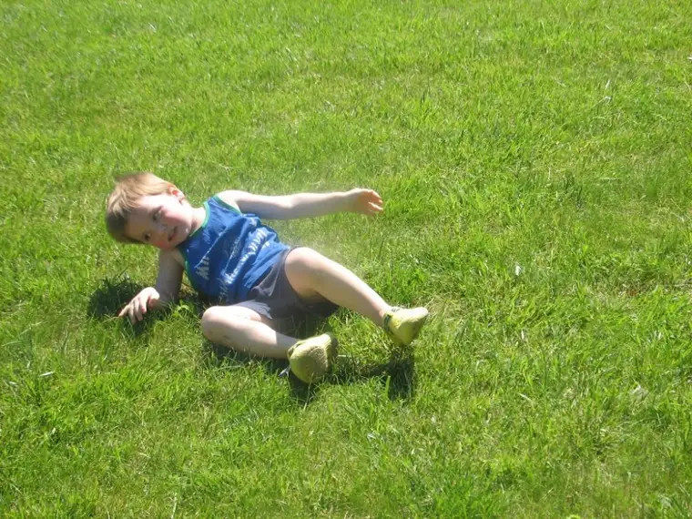

When was the last time you laid down on the top of a grassy hill, tucked in your arms and rolled down? I think the most edifying thing my children have done for me is to remind me of what that feels like — the unencumbered takeoff, the erratic roll downward, the exhilarating, lopsided halt at the bottom.
{kind=link}
Yesterday I told my little ones we’d go to the park, but the day got away from us. By the time we were ready to leave, the bright sky had turned cloudy and the wind had picked up. My vision of sitting on a park bench with a book, peeking up on occasion to watch my kids flying around on the playground equipment, vanished and I lost my appetite for Lindenwood. But when my five-year-old insisted, I realized I needed to stay true to my promise from earlier, and off we went.
Needless to say, I didn’t get more than about one paragraph read from my book, but that’s okay. Instead, I pushed my 3-year-old on one end of the swingset and watched my 5-year-old on the far end. He’d gotten into a “big” swing by himself, pushed off and pumped all on his own. It was the first time he hadn’t needed any assistance. “Yippeee!” he said as he flew through the air with a smile on his face. The sky was the limit as he rose higher and higher, his grin spreading ever more broadly, causing mine to widen in tandem with his.
It’s been a while since I’ve had a child in kindergarten, and I’d forgotten how fresh the world can be through the eyes and mind of a five-year-old. I love hearing about his day at school. I love hearing about his new “friends,” even when he can’t remember their names. I love hearing him proclaim, bursting with pride, that he can count to 110. I love that he is starting to recognize letters in certain words, and is asking me to read signs in the world around him. “What does that say?” ” What does this say?” I love the curiosity and the awe of it all. But mostly, I love the “Yippeeees!”
No matter how much of a grump I might be in any given moment, it doesn’t take much to pull me out of that when I look into the eyes of my five-year-old. When I glimpse the world from his vision, everything falls into proper perspective.
“Yippeeee!”